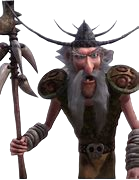

Traître de Beurk, manipulateur dans l'ombre
| Rôle | Traître, Informateur |
| Affiliation | Tribu de Beurk (en apparence), Indésirables (réel) |
| Particularité | Trahison camouflée derrière une façade d'allié |
Mildiou est le traître de Beurk par excellence. Semblant loyal à sa tribu en surface, il agit secrètement dans le dos de ses camarades, transmettant des informations à leurs ennemis. Sa duplicité et ses manipulations créent des tensions au sein de la communauté de Beurk. Sa révélation en tant que traître est l'un des moments les plus surprenants de la série.